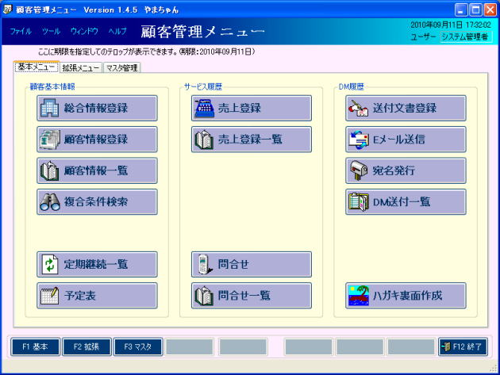

「お客様第一」顧客管理システム
「お客様第一」は顧客管理＋販売管理システムです。
顧客管理を中心に、販売管理・請求・入金までサポートしています。
全ての画面、帳票において、ユーザーの独自設定を可能とし、
項目の追加、名称の変更、配置、カラー等々が全て設定可能となっています。
保存された履歴から、特定の顧客を絞込み、そのまま有効なアクションにつなげることが出来ます。
素早いアクションで顧客は満足感を高め、リピーターからファンへ、そして口コミへと広がります。
主な機能
- ログイン方法の選択
- メニュー画面の設定
- データベースの切替機能（複数会社等にも対応）
- 動作環境の保存・変更（テンプレートの切替）
- 画面のカラー、表示方法等の設定
- 項目名（各種の用語）の変更
- 独自計算式の追加
- ログインユーザー毎の権限の設定
- システム監視機能
- CSV取込機能、CSV出力機能
- データベース、データ保存フォルダのバックアップ機能
- ネットワーク対応（LAN対応）
顧客へのあらゆるサービスに対応
- 総合情報により、顧客の全情報を１画面で表示
- 複合条件検索により、幅広い検索が可能
- 全情報を、カレンダー形式で表示可能
- メニューに備忘録よりテロップ表示
- 宛名ラベル、はがき、封書の宛名、はがきの裏面作成
- メールの一斉送信、はがきの一括作成が可能
- 無償サービスを複数設定可能
- 有償サービスを複数設定可能（売上の内容によって分ける事も可能）
- 預かり金、前受け金等を複数設定可能
- 現金精算、売掛、請求、入金に対応
- 付加情報として、あらゆる情報を顧客に対し登録可能
- 顧客毎の専用書庫フォルダにあらゆるファイルを保存可能
- 30を越す帳票が出力可能（全て自由に変更可能）
ダブルクリックで関連項目の検索や、他のプログラムが自動で起動されます。
例えば、URLならIEが開き、Mailアドレスなら、メーラーが起動され、ファイルならそのファイルが開きます。
直感的な操作に対応した画面、プログラムが自動で起動されます。
画像の取り込みも、クリップボード・ファイルどちらからも取込可能で、
その場の必要な情報をその場で登録が可能です。
以下は、ほんの一部の機能です。
さらに詳しい情報は、オンラインマニュアルをご覧下さい。
メニューのボタンも自由に変更可能です、
よく使う機能のみ集めて使いやすく！
また上部には、備忘録よりテロップ表示もできます。

顧客の全情報が一画面で見ることができます。
顧客の情報を見逃しません！
検索条件を自分で作成できます。
各種の履歴情報を組み合わせて、顧客の絞込みができます。
全情報をカレンダーで見やすく表示
スケジュール調整に最適です！

現金での精算、売掛での請求書発行、請求の締め処理、すべてをサポート
請求もれはなくなります！
ユーザー独自に必要な項目を各種画面に追加、
使いたい項目を使いたいだけ、好きな場所に配置
画面に追加した項目を、すべて帳票にも追加できます。
宛名印刷はラベル・はがき・封筒用にそれぞれ作成可能
もちろん、ハガキの裏面も作成できます。
QRコードだって印刷できてしまいます。
まだまだ、機能は盛りだくさん。
ですが、操作は簡単、直ぐに使いこなせます。
さらに詳しい情報は、オンラインマニュアルをご覧下さい。
試用版のダウンロードはこちらからどうぞ。
発売したばかりですので、これからも、まだまだ機能アップしていきます。
どうぞ、ご検討ください。
ただいま、発売記念として\4,800円（税込み)にて販売！！
スタンドアロン版は\2,400円（税込み)です。
※サポートについて
メールサポートのみとなります。
特に制限はありません。
※メールでのサポートに制限はありません。
使えるようになるまで、サポート致します。
御社独自の、御社に最適な顧客管理にすることができます。
また、既にお持ちのデータ（エクセル等）を、このシステムに取込みたい等のご要望も、個別に対応いたします。
さらに、インストール、初期セットアップ、データ移行等を一括で現地対応もいたします。
もちろん、いずれも低価格にて！
お気軽に、お問い合わせ下さい。
2014/11/22 「お客様第一」顧客管理システムVersion1.5.2リリースしました。
2014/04/28 「お客様第一」顧客管理システムVersion1.5.0リリースしました。
遅くなりましたが消費税8%対応が完了しました。
税込み処理を選択している場合が多いようなので、特段の差異はありません。
2012/04/28 「お客様第一」顧客管理システムVersion1.4.13リリースしました。
2011/11/07 「お客様第一」顧客管理システムVersion1.4.12リリースしました。
2011/06/23 「お客様第一」顧客管理システムVersion1.4.11リリースしました。
2011/05/09 「お客様第一」顧客管理システムVersion1.4.10リリースしました。
2011/01/24 「お客様第一」顧客管理システムVersion1.4.9リリースしました。
2010/11/26 「お客様第一」顧客管理システムVersion1.4.8リリースしました。
2011/11/08 「お客様第一」顧客管理システム。価格改定（大幅値下げ）しました。
2010/10/22 「お客様第一」顧客管理システムVersion1.4.7リリースしました。
2010/09/24 「お客様第一」顧客管理システムVersion1.4.6リリースしました。
2010/09/03 「お客様第一」顧客管理システムVersion1.4.5リリースしました。
2010/08/16 「お客様第一」顧客管理システムVersion1.4.4リリースしました。
2010/07/13 「お客様第一」顧客管理システムVersion1.4.3リリースしました。
2010/06/30 「お客様第一」顧客管理システムVersion1.4.2リリースしました。
2010/06/21 「お客様第一」顧客管理システムVersion1.4.1リリースしました。
新着記事NEW ・・・新着記事一覧を見る
VBA100本ノック 100本目：WEBから100本ノックのリストを取得｜VBA練習問題（3月3日）
VBA100本ノック 99本目：自動席替え（行列と前後左右が全て違うように）｜VBA練習問題（3月2日）
VBA100本ノック 98本目：席替えルールが守られているか確認｜VBA練習問題（3月1日）
VBA100本ノック 97本目：Accessデータを取得（グループ集計）｜VBA練習問題（2月27日）
VBA100本ノック 96本目：Accessデータを取得（マスタ結合&抽出）｜VBA練習問題（2月26日）
VBA100本ノック 95本目：図形のテキストを検索するフォーム作成｜VBA練習問題（2月24日）
VBA100本ノック 94本目：表範囲からHTMLのtableタグを作成｜VBA練習問題（2月23日）
VBA100本ノック 93本目：複数ブックを連結して再分割｜VBA練習問題（2月22日）
VBA100本ノック 92本目：セルの色を16進で返す関数｜VBA練習問題（2月20日）
VBA100本ノック 91本目：時間計算（残業時間の月間合計）｜VBA練習問題（2月19日）
アクセスランキング ・・・ ランキング一覧を見る
1.最終行の取得（End,Rows.Count）｜VBA入門
2.RangeとCellsの使い方｜VBA入門
3.変数宣言のDimとデータ型｜VBA入門
4.マクロって何？VBAって何？｜VBA入門
5.Range以外の指定方法（Cells,Rows,Columns）｜VBA入門
6.セルのコピー&値の貼り付け（PasteSpecial）｜VBA入門
7.繰り返し処理（For Next)｜VBA入門
8.セルに文字を入れるとは（Range,Value）｜VBA入門
9.マクロはどこに書くの（VBEの起動）｜VBA入門
10.とにかく書いてみよう（Sub,End Sub）｜VBA入門
このサイトがお役に立ちましたら「シェア」「Bookmark」をお願いいたします。
記述には細心の注意をしたつもりですが、
間違いやご指摘がありましたら、「お問い合わせ」からお知らせいただけると幸いです。
掲載のVBAコードは動作を保証するものではなく、あくまでVBA学習のサンプルとして掲載しています。
掲載のVBAコードは自己責任でご使用ください。万一データ破損等の損害が発生しても責任は負いません。